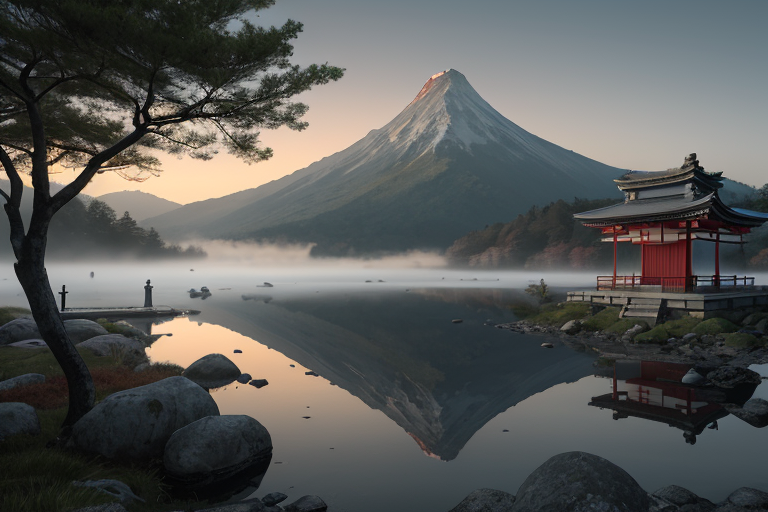
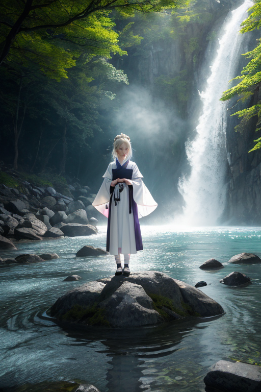
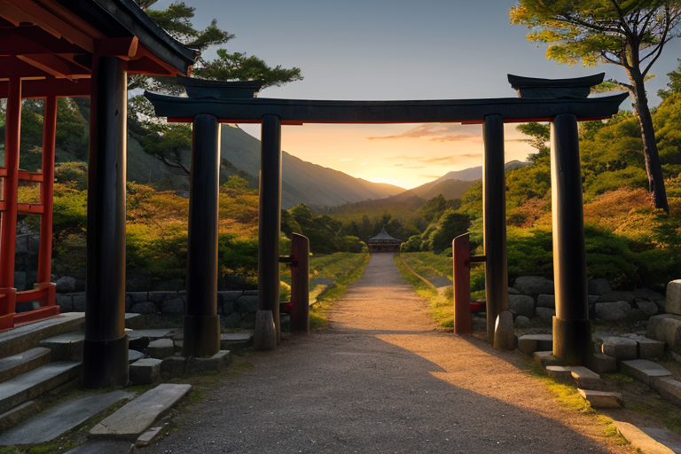
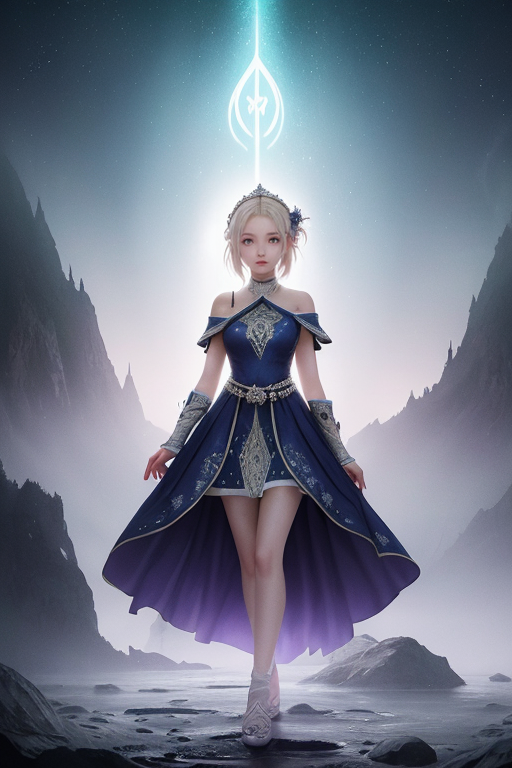
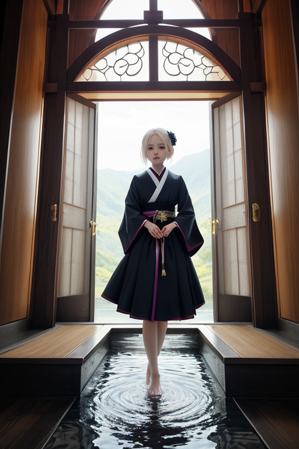

第一章 現実の栃木
あなたはまだ気づいていない。この土地にも、王がいることを。
日光東照宮の陽明門は、朝もやに霞んでいた。極彩色の彫刻も、この時間帯は静かな影を落とすだけだ。参道を掃く音だけが、凍りついた空気を切り裂く。ここは、徳川家康という巨大な力が「鎮座」する場所である。歪みの列島において、それは単なる比喩ではない。強大な意志が封じ込められた、物理的な「重し」なのだ。
中禅寺湖の水面は鉛色で、鏡のように男体山を映す。その山容は、あまりに整然としていて不気味だ。本来、山はもっと荒々しいもののはずなのに。湖畔を歩く観光客の誰もが、ふと、理由のない畏怖を覚える。それは、この風景が「自然」ではなく、「調整」された結果であることを、無意識が感知するからだ。
トチギア・セラフィムは、その男体山の山頂近く、人の目に触れない岩陰に立っていた。深紫と白の紋章が、彼の胸で微かに脈打つ。彼の目は、東照宮の霊廟、そして眼下に広がる湖と町を、一点の揺るぎもなく見つめている。守護の義務。それが彼の全てだった。感情など、不要なもの。ただ、この封印が解かれぬよう、重しがずれぬよう、微調整を続けるだけだ。彼はそう信じていた。

第二章 歪みの兆候
中禅寺湖の水面が、風もないのに微かに波紋を立てた。それは物理的な揺れではない。霊峰の根元、男体山の封印に生じた、目に見えぬ歪みの反映だった。トチギア・セラフィムの胸の紋章が、一瞬、鋭く疼いた。彼は目を閉じ、結界の状態を感知する。足利学校の礎石から発せられる学問の秩序の波動が、かすかに乱れている。華厳の滝の轟音に、ほんの一瞬、不協和音が混じった。
「王よ」
傍らに現れた主席妖精セラフィナの声は、平然としているが、その瞳には警戒の色が濃い。
「東照宮・奥院の霊廟周辺の結界、数層のうち最外層に、ごく微小な亀裂を確認。原因は不明。現在、ニッコラが聖域波動の安定化に努めております」
「微小、か」
トチギアは低く呟いた。かつてないことだ。この「封印線」世界線において、霊峰に封じられた膨大な力は、完璧な均衡の上で静止しているはずだった。その均衡が、ほんの塵一粒ほど、傾きかけた。彼の内側で、義務と忠誠が冷たい炎のように燃え上がる。原因を特定し、修復せねばならない。それが守護王の責務だ。
しかし、その時、彼は感じた。湖畔の温泉街から漂ってくる湯葉の優しい香り、日光彫りの工房で職人が刻む規則正しい音。守るべきは、この穏やかな日常の連なりそのものなのだと。その認識が、彼の無感情だった核心を、かすかに揺さぶった。

第三章 王の葛藤
日光東照宮の陽明門は、極彩色の彫刻に夕陽が沈み、深紫の影を落としていた。トチギア・セラフィムは、結界の要であるこの場所で、地脈の異変を感知していた。霊峰・男体山の深部で、長年封じられてきた「歪みの核」が微かに脈打っている。封印を強化すれば、周囲の土地に負荷がかかり、小さな地震や斜面の崩落が誘発される。解放し、自らが制御を試みれば、より大きな災いを招くかもしれない。
「殿下、結界の再編成は完了しました」
セラフィナの声は硬い。忠誠ゆえの規律が、選択の余地を奪おうとする。
「だが……那須の温泉街では、新しい湯治客の受け入れが始まっています」
ニッコラが付け加えた。その報告には、守るべき日常の営みが込められていた。
餃子の店の賑わい、いちご農園で働く人々の笑い声。足利学校の跡地に響く、かつての学問の残響。守るべきものは、この土地の平穏な時間なのか。それとも、より大きな災厄から遠ざけるという、王としての絶対的な義務なのか。彼の内側で、冷徹な義務感と、新たに芽吹いたらしい「懸念」という感情が、静かに、しかし激しくせめぎ合った。

第四章 妖精との対話
「王よ、我々は語らねばなりません」
セラフィナの声は、中禅寺湖の水面のように静かでありながら、底に重いものを湛えていた。彼女はトチギア・セラフィムの前に跪き、日光彫りのような精緻な紋様が浮かぶ手のひらを差し出した。その上に、深紫と白の光が、霊峰・男体山の輪郭を描く。
「この封印は、単なる力の抑制ではありません。『守護』そのものの形です」
彼女は語り始めた。かつて、この地の歪みはあまりに大きく、一つの大災害が、すべてを飲み込もうとした。初代の王は、その全ての力を霊峰に封じ込め、自らもその核に溶け込むことで、破滅を食い止めた。代償は、この王国の力の大半が、山と一体化し、動かせなくなったことだ。
「我々は、その意思を継ぎ、封じられた力を微調整の『錘』として用い、日常を守ってきました。しかし……」
セラフィナの目が、わずかに揺れた。
「封じられた力が、近年、『目覚め』の兆候を見せています。王よ。あなたが感じている『懸念』は、無関係ではありません。我々が守るべきものは、外の平穏か、内に封じられた破滅か。その選択が、再び迫られているのです」

第五章 微調整と余韻
日光東照宮の陽明門が、朝日に照らされていた。トチギア・セラフィムは、その漆と金の静謐な輝きの下、目を閉じた。足元から、霊峰そのものである巨大な「意思」のうねりが伝わってくる。封印の亀裂。それを塞ぐには、王国の力そのもの、つまり自分自身の存在を「錘」として差し入れる必要があった。
「王よ、」セラフィナの声が静かに響く。「この微調整は、あなたの存在の一部を永久にこの地に縛り付ける代償を伴います。」
「知っている。」トチギアは答えた。規律と忠誠。それが自分を形作る感情だ。守るべきものは、この地に生きる人々の、餃子を囲む笑い声であり、いちご畑を渡る風であり、湯葉がゆらぐ温泉の湯気だ。封じられた破滅の力などではない。
深紫の光が王の全身から迸り、白い翼の紋章が地面に刻まれる。山のうねりは、ゆっくりと静まっていった。代わりに、トチギアの感覚の一部が、確実に遠のいていく。山の一部となり、調整機能として組み込まれていく実感。
微調整は完了した。次の地震は一段階小さく、次の津波は数秒遅れるだろう。王は、かつてより少しだけ静かに、中禅寺湖の水面を見つめた。答えは出た。守るべきものは、儚くも続く、この日常のすべてだ。
あなたの町にも、王がいる。